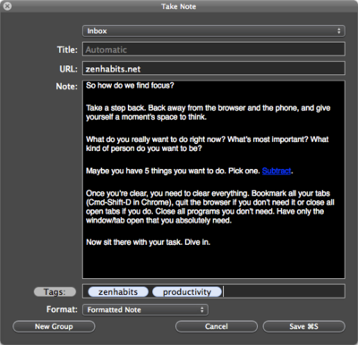

|
|
Take notes |
|
DEVONthink Pro Office is perfectly suited for taking notes and organizing them.  Use DEVONthink Pro Office's Take Note panel or its Dock menu to quickly create new notes, write notes using the advanced text editing capabilities of Mac OS X, and find a place to file them in your database using the Classify & See Also button. Possible uses:
Continue to read here: |